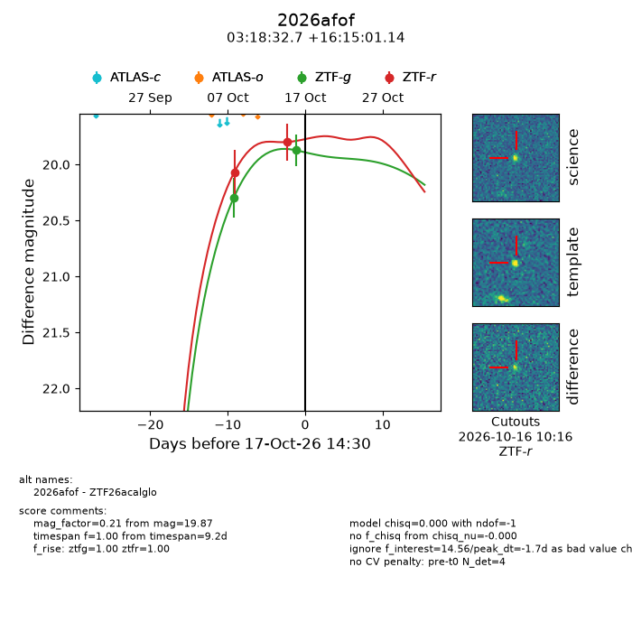
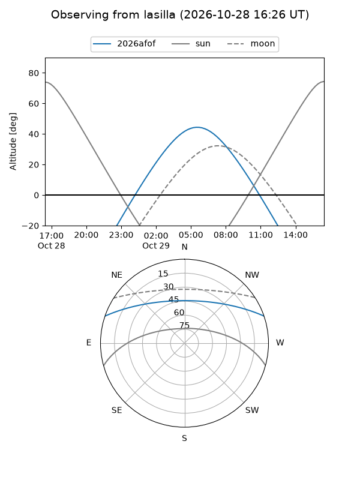
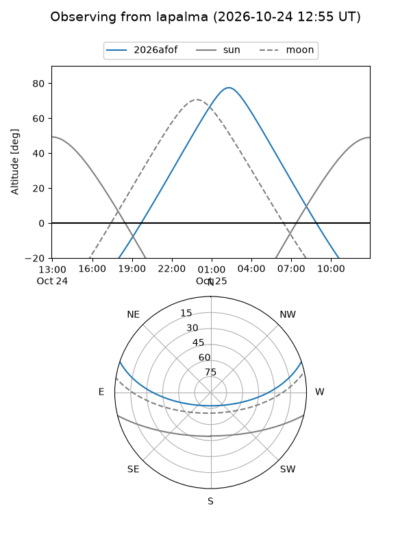
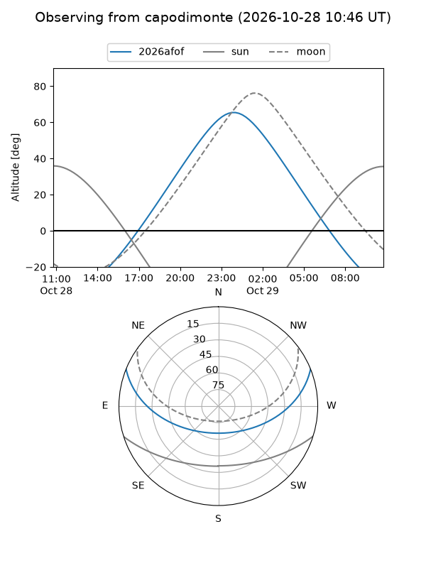
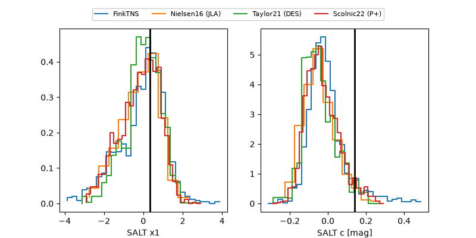

2026afof
Target 2026afof at 2026-10-17 14:31
Aliases and brokers:
FINK-ZTF: ztf.fink-portal.org/ZTF26acalglo
Lasair-ZTF: lasair-ztf.lsst.ac.uk/objects/ZTF26acalglo
ALeRCE-ZTF: alerce.online/object/ZTF26acalglo
YSE-PZ: ziggy.ucolick.org/yse/transient_detail/2026afof
TNS name: wis-tns.org/object/2026afof
Direct TNS query: direct search
alt names
ZTF26acalglo (ztf,fink_ztf)
2026afof (tns,yse)
Coordinates:
equatorial (ra, dec) = 49.6360,+16.25032
equatorial (HMS+DMS) = 03:18:32.65,+16:15:01.14
galactic (l, b) = (166.7168,-33.83337)
Flags:
peak dt: -1.7
Photometry:
last ztfg=19.87, ztfr=19.80
2 ztfg, 2 ztfr detections
Lightcurve

Visibility



Additional plots
